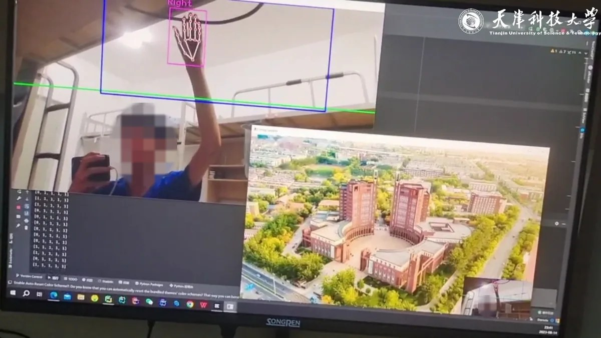
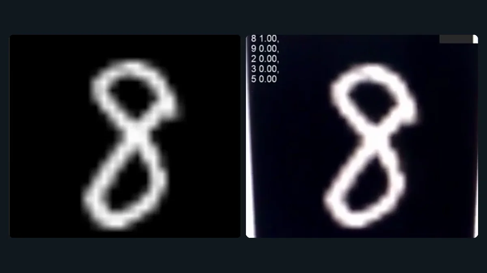
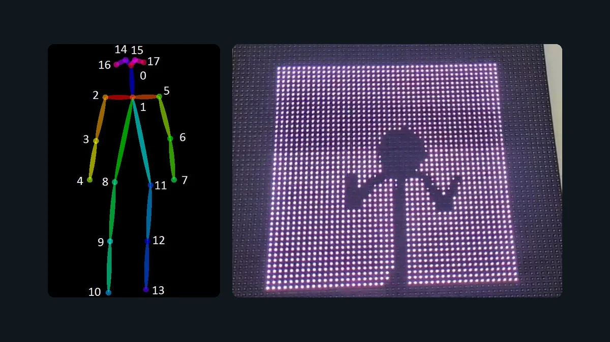
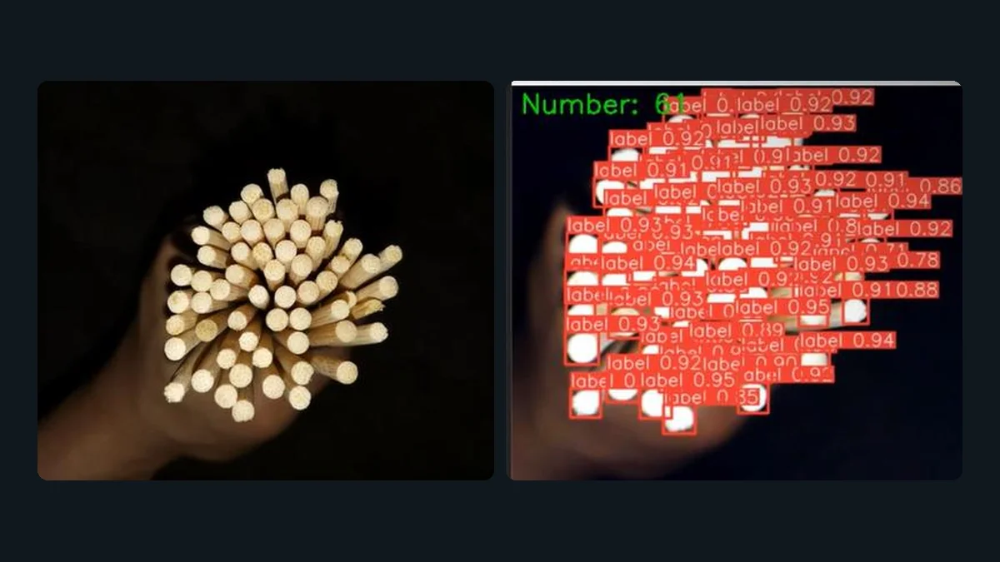
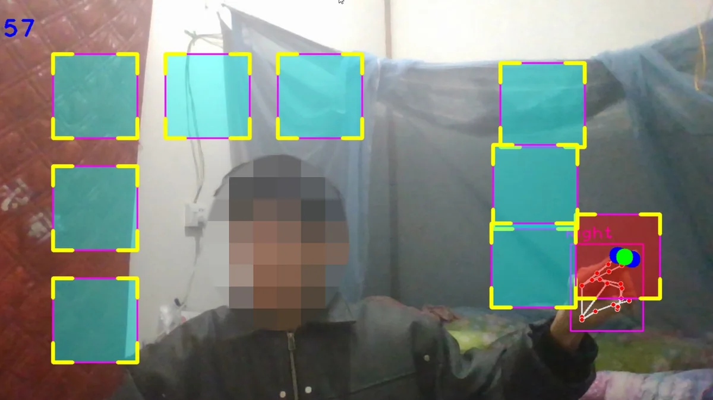
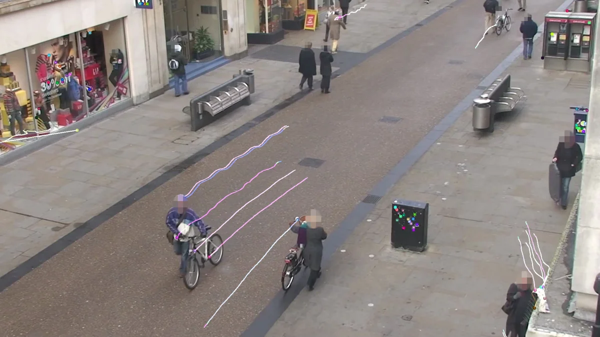

国家级大学生创新创业训练计划
工业钢筋实时计数
把钢筋端面检测部署到便携式 PDA，供仓储人员在现场核验钢筋数量。

实现
以 PyTorch 搭建模块化检测框架，用 GAN 生成钢筋端面图像补充训练数据。在 YOLOv8 中引入轻量高斯注意力和 SCConv，并调整损失函数，处理端面粘连与尺寸差异。
结果
- 计数准确率
- 90%
- 模型参数量
- −30%
- 单帧推理
- <50 ms
项目用于某建筑公司的仓储管理，人工巡检效率提升 90%。
国家级大学生创新创业训练计划
把钢筋端面检测部署到便携式 PDA，供仓储人员在现场核验钢筋数量。
以 PyTorch 搭建模块化检测框架，用 GAN 生成钢筋端面图像补充训练数据。在 YOLOv8 中引入轻量高斯注意力和 SCConv，并调整损失函数，处理端面粘连与尺寸差异。
项目用于某建筑公司的仓储管理，人工巡检效率提升 90%。
手势交互
用手势控制幻灯片翻页和画面批注，演示时可以在摄像头前直接操作。

把 PowerPoint 文件转换为逐页图片，用 MediaPipe 跟踪摄像头画面中的手部关键点，通过 OpenCV 绘制交互反馈。识别到的手势可映射为上一页、下一页、连续翻页和批注等操作。
项目于 2023 年 9 月入围百度飞桨全国大学生人工智能创意赛决赛。
实时识别
在实时画面中定位手写数字，将数字的位置和预测类别反馈到画面中。

利用 MNIST 手写数字数据训练 YOLOv8 模型。接入实时画面后，对检测到的区域给出数字类别和置信度。
示例展示了手写数字 8 从画面输入到模型预测的过程。
图像处理
以两张图像作为输入，在保留内容图结构的同时，让输出呈现参考图的视觉风格。

用 VGG19 提取多个层的图像特征，分别计算内容损失和风格损失，再用 L-BFGS 迭代优化生成图的像素。
通过并列比较输入与输出，可以观察构图如何保留，以及参考图的纹理和色彩如何影响生成结果。
姿态估计
将人物动作转化为彩色火柴人动图，用于 LED 屏展示。

用 MoveNet 模型定位人体关键点，连接关键点绘制彩色骨架。将连续的姿态帧合成为 GIF，供 LED 屏播放。
目标检测
从一张图像中数出竹签，同时在原图上标记检测到的位置，便于核对数量。

训练 YOLOv8 检测模型，让模型在输入图像中定位竹签。统计检测到的目标框数量，得到该图像的计数结果。
手势交互
通过摄像头捕捉手势，在屏幕上选取、拖动和改变积木颜色。

用 OpenCV 处理摄像头画面，将手部关键点的位置映射到屏幕方块的选取与拖动，以食指和中指的距离控制颜色。
运动追踪
将视频中被跟踪的特征点轨迹叠加到街景画面上，展示连续帧之间的运动。

用 OpenCV 从首帧提取角点，通过 Lucas–Kanade 方法估计角点在后续帧的位置，并将相邻位置连成轨迹。